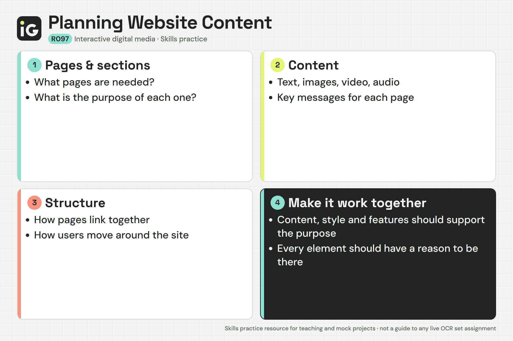
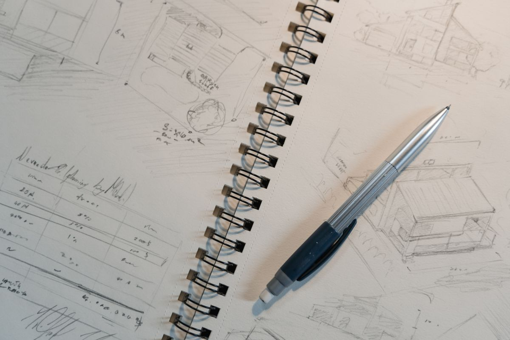

Images, audio, video, animation
- Engage and explain

Use your mind map and mood board from page 02 to decide what content your IDMP will include and how those ideas will become part of your website design.
Your mind map and mood board should now become useful planning evidence. Look back at the ideas you generated and decide which ones will actually appear in your Interactive Digital Media Product.
For each strong idea from your mind map, explain how it could become a real part of your website.
Your mood board should help you decide how your IDMP will look and feel. Explain how the visual ideas will influence your planning and design.
Use this checklist to make sure you can cover every part of this topic.

The content you need – and who it's for – decides how many pages or screens you need and how they connect.